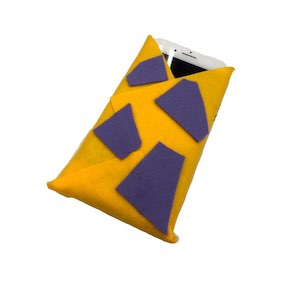

商品概要
寒いとオフのiPhoneのためにボタン温め暖房になる保温ケース
作業進捗
材料 - 不織布、グルーガン、携帯電話、テープ
時間 - 10分〜15分
携帯電話を包むことができる程度の大きさの黄色の不織布を材料に選んだ。
その上に携帯電話を上げて置きサイズに合わせて包む。
包んだ後、テープで固定させヅンフ危険だから携帯電話は取り出す。
グルーガンを使用して合わせたサイズで付ける。
前面にボタンを付ける。しかしボタンが何か材料がなかったので他の色の不織布を貼ってボタンを表現した。
IMAGE

アドバイス